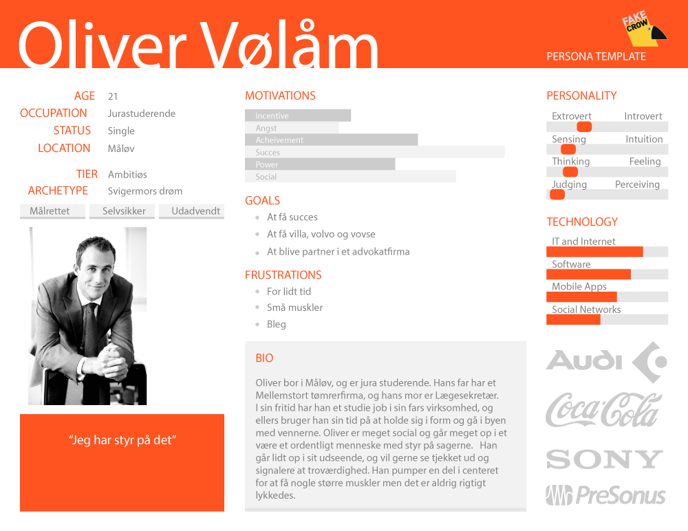

Kasper Basse startede Joe and the Juice i 2002 og er stadig den dag i dag, CEO. I dag har Joe and the Juice 240 butikker, 1600+ medarbejdere, og deres mål er at udvide med 600+ butikker inden år 2020.
Joe and the Juice har 7 forskellige loyalitetskort man kan købe. Man betaler for kortet, dvs. 10 x et af deres produkter, og sparer penge på det samlede antal produkter. Man får altså mere ud af at købe et kort, end at købe en kaffe til fuld pris. Deres loyalitetskort udgør 6-10% af deres omsætning, og her er salget størst i Danmark og norden.
Joe and the juice vil gerne digitilisere loyalitetskortene og forstærke salgseffekten af dem.
Det smarte ved at have kortet digitalt, er at man ikke mister det og dermed taber pengene. Derudover er det smart for Joe and the Juice, fordi de kan se hvor kortene er købt, hvem der har købt dem, hvornår osv., som er gode informationer og data for dem. Deres app har pt. 5733 antal brugere, og fordeling af køn er ca. 50/50. Målgruppen er primært norden, de unge, og især dem der over 35 da de for regel har flere penge end de unge.
Hvad gør Joe and the Juice i forvejen:
Joe and the Juices udfordringer:
Joe and the Juice giver ikke ud gratis - folk kommer ikke ind på Joe fordi de giver dem noget gratis, men fordi de ved de får noget godt. Derfor gider de ikke at lave spil osv.
De er bange for at ramme et forkert segment, med folk der udelukkende går efter at få ting billigere og gratis. De vil gerne ramme folk som er oprigtigt interesseret i Joe and the Juice, og gerne vil give noget for produkterne. De vil ikke nedgredere deres produkter, så vil brandværdien falde, og så vil de ikke kunne sælge deres produkter til så høje priser længere.
De tror på konceptet, men er bange for at det bider dem på et tidspunkt - derfor har de ikke gjort mere for det indtil videre.
Resumé af spørgeskema
Som vist foroven er den gennerelle målgruppe for Joe and the juice, kunder mellem 20-35+ år. Mere specifikt, ligger der et større forbrug for kunder mellem 20-25 år med 42% og kunder i alderen fra 35+ år på hele 47%. Antallet af forbruger er steget siden Joe and the Juice blev lanceret i 2002. Hele 52% af Joe and the Juices forbruger er kvinder, og 48% er mænd.
Den sunde holdning og livstil, tiltrækker juice entusiaster, livstils bloggere, hipsters, atleter men også den almene befolkning som vil nyde et lækkert måltid i et moderne og upbeat atmosfære med god musik i baggrunden.
Målgruppen for Joe and the Juice kan være folk som er opmærksomme på deres kalorieindtag og vil gerne adoptere eller bibeholde et sundere livstil, uden at skulle gå på kompromis med smagen. På Joe and the juices hjemmeside kan man se udregninger på energifordelingen på diverse juices, shakes og sandwichers til stor fordel for netop denne kundekreds.
En undersøgelse fra Landbrug og Fødevarer (2017) viser, at 3 ud af 4 danskere gerne ville leve sundere, end de gør i dag. Det gælder især personer under 45 år. Ifølge undersøgelsen har knap fire ud af 10 danskere været på en form for diæt inden for det seneste år – det gælder hele 44 procent af kvinderne mod 30 procent af mændene. Dette kan være forklaringen på hvorfor største delen af Joe and the juices klientel er kvinder.
På baggrund af vores spørgeskema, har vi fået en masse god information vi kan bruge videre i vores process. Vi skrev svarene på post-it's og opdelte dem i de overordnede kategorier: design, frynsegoder og reklame. Mange svarede de gerne ville bruge en Joe App hvis der var gode rabatter, tilbud osv., men det understregede Joe and the Juice til deres brief, at de ikke ville give. Det er ikke en del af deres koncept.
Dog valgte vi at gå videre med både "design" og "reklame". Her var det tydeligt at se, at folk efterspurgte en mere interessant og spændende app'en, samt mere information omkring appen, og klippekortenen på app'en. Dette valgte vi at gå videre med.
Derudover har vi valgt også, at kigge nærmere på det tidligere "problem" Joe and the Juice havde haft med business-kunde segementet. Det ødelagde "flowet" og der var ikke nok interaktion mellem juice og business-kunde. Dette vil vi også prøve at tage med videre i vores process.
GOALS:
NEEDS:
Vi har valgt at arbejde med to forskellige personas, da Joe and the Juice's målgruppe er både de unge og dem over 35 med penge. Vi vil både ramme dem der efterspørger et mere interessant design og en bedre forståelse for besparelserne, og dem der efterspørger en bedre løsning på de store bestillinger fra kontorer. Dette vil vi kombinere i én App.
Joe and The Juice nævnte, at de havde nogle udfordringer med en tidligere app, hvor man kunne bestille hjemmefra. Den gav ingen interaktion mellem juicere og kunder, og var primært business mennesker og større virksomheder, som brugte den, fordi de ikke havde tiden til at vente. Det ødelagde workflowet, fordi der pludselig kom 20 sandwich-bestillinger, som gik ud over alle andre produkter – Joe vil gerne få disse store bestillinger til at flyde ind, hvor det ikke ødelægger flowet, og samtidige bibeholde kontakten mellem juicer/kunder. Så hvordan kan man få et bedre idé til store bestillinger på en smartere måde?
APPROACH:Vi vil gerne belønne kunder som lægger mange penge i jeres virksomhed, f.eks. hvis en kunde køber mange kort om måneden osv. – skulle dette give en form for rabat. Derfor har vi tænkt os at lave et membership-card i stedet, så vi ikke mister virksomhederne og business folkene. Spørgsmålet er så hvordan? Den tidligere app er blevet lukket, hvor muligheden for forudbestilling er boykottet. Vi vil have lokket dem tilbage, da det er dem, som ligger de store beløb hos jer. Vi vil ikke lave endnu en bestillings app, men derimod lokke dem tilbage, ved at give dem et eksklusivt medlemskort, i form at et abonnement. Kortet skal være lækkert at se på, og skal udvise en form for eksklusivitet. Kunden har ikke mulighed for at forudbestille, men har derimod mulighed for at trykke på kortet, og krydse alle tingene af på forhånd. Appen kan gå på runde i virksomheden, og alle kan krydse af, hvad de vil hver i sær vil have fra menukortet. Der vil så være en person, som kan gå hen til Joe and The Juice, og vise sit medlemskort. Juiceren kan trykke på medlemskortet, og på bagsiden vil der være bestillingen. Dette er med til at bibeholde interaktionen mellem juiceren og kunden, og som en form for rabat, så vil kunden som er nede og hente/vente på bestillingen få en valgfri juice eller shake, imens han/hun venter på den store bestilling. Derved ville det ikke blive en byrde for de travle folk, men lige tage en slapper med en juice/shake og nyde den gode atmosfære i baren.
BENEFITS:Brugeren har ikke længere mulighed for at forudbestille, dog vil brugeren få en form for relation til Joe and The Juice. Imens han/hun venter på bestillingen, bliver dette ikke et problem for den travle business person, da man kan sidde og nyde en juice/shake mens han/hun venter på bestillingen og tage et pusterum fra arbejdet. Ligeledes fordi vi har valgt at lave et eksklusivt medlemskort til den bruger der ligger mange penge i butikken, giver dette også en følelse af at brugeren bliver taget godt af, og føler sig særlig/speciel af at have dette medlemskort.
COMPETITION:Fordi dette ikke længere er et koncept, som mange andre stedet bruger via f.eks. JustEat, hvor de forskellige mad og drikkestedet mister kontakten mellem kunder/personalet. Vi skaber en relation ved at lokke kunden ned i butikken.
Andre forbedringer/tiltag ved appen:For ikke at glemme de almindelige kunder og deres målgruppe, så har vi ligeledes forbedret klippekortene, da de ikke var tiltalende nok. Hvorfor købe et klippekort ved Joe and The Juice? Vi har ikke lavet priserne om, men derimod skjult dem lidt, og ændret på designet på hvert enkelt klippekort, så det ser lidt mere smart ud for at lokke den almindelige forbruger til at købe dem. Ændret designet til noget der kan relateres til, med hvad man kan bruge kortet til. Hvis det er kaffekort, jamen ændret til nogle brune farver som kaffebønner. Hvis det er et juicekort, så har vi ændret det til et flot design med en masse forskellige farver, som alle de forskellige juice man kan få.
Feature set
- Tilføj betalingskort -
- find butik -
- køb kort -
- sign in -
- sign in -
- sign up -